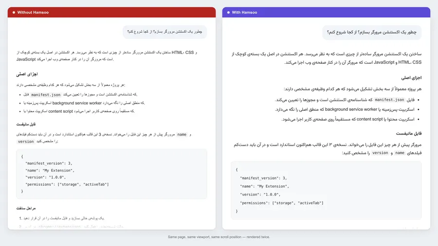

از این پس متن فارسی در سایتهای هوش مصنوعی راستچین و خوانا نمایش داده میشود. یک دقیقه وقت بگذارید تا بدانید هر کلید چه میکند.

در نوار ابزار مرورگر روی آیکون افزونهها بزنید و همسو را سنجاق کنید. رنگی بودن آیکون یعنی همسو در آن صفحه فعال است.
روشن و خاموش کردن سریع با این کلیدها: Alt+Shift+R
کلیدها را بزنید و تفاوت را در متن نمونه ببینید. متن پایین دقیقاً همان حالتی است که بدون همسو میبینید.
مدل GPT-4 در سال 2024 معرفی شد و دقتش حدود 15% بهتر از نسخهٔ قبلی است. (نتیجه: تفاوت را میشود دید!)
این بخش فقط یک نمونهٔ نمایشی است: تنظیمات شما را تغییر نمیدهد و چیزی ذخیره نمیکند.
همسو هیچ دادهای جایی نمیفرستد. همهچیز روی همین دستگاه میماند.